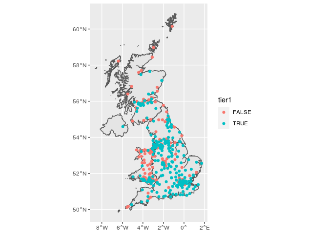
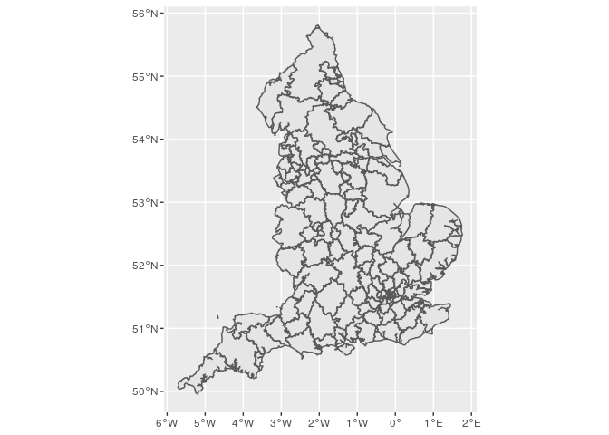

arear
The goal of arear is to …
Installation
You can install the released version of arear from CRAN with:
install.packages("arear")
And the development version from GitHub with:
# install.packages("devtools") devtools::install_github("terminological/arear")
Example
There are a set of maps bundled:
devtools::load_all() #> Loading arear #> Registered S3 method overwritten by 'geojsonlint': #> method from #> print.location dplyr #> #> Attaching package: 'testthat' #> The following object is masked from 'package:dplyr': #> #> matches #> The following object is masked from 'package:purrr': #> #> is_null #> The following object is masked from 'package:tidyr': #> #> matches here::i_am("README.Rmd") #> here() starts at /media/data/Git/arear options("arear.cache.dir"=here::here("data-raw/cache")) # library(arear) ## basic example code arear::listStandardMaps() #> [1] "WD11" "WD19" "LSOA11" "MSOA11" #> [5] "DZ11" "CA19" "HB19" "LHB19" #> [9] "CTYUA19" "LAD19" "LAD20" "CCG20" #> [13] "NHSER20" "PHEC16" "CTRY19" "LGD12" #> [17] "OUTCODE" "GBR_ISO3166_2" "GBR_ISO3166_3"
Getting and plotting a map for the UK is simple:
map = arear::getMap("CTRY19") #> using cached item: /media/data/Git/arear/data-raw/cache/CTRY19-6e27f3f3a3af4831b98f646a7ad9cff8-d97019db05610cf55de038f3acd898e9.rda nhshospitals = arear::surgecapacity %>% dplyr::filter(sector == "NHS Sector") ggplot()+ geom_sf(data=map)+ geom_sf(data=nhshospitals,aes(colour=tier1))

But the main thing is creating a catchment area:
apiTrusts = readr::read_csv("https://api.coronavirus.data.gov.uk/v2/data?areaType=nhsTrust&metric=hospitalCases&format=csv&release=2021-03-01") #> Parsed with column specification: #> cols( #> areaCode = col_character(), #> areaName = col_character(), #> areaType = col_character(), #> date = col_date(format = ""), #> hospitalCases = col_double() #> ) # There are quite a few mental health, community, specialist and children's trusts that we do not as yet have sensible capacity data for, and although they report COVID # cases these are essentially incidental to the care of the patient. # However at last look this list also includes NHS Nightingale hospitals which we have not included # apiTrusts %>% select(areaCode,areaName) %>% distinct() %>% anti_join(arear::surgecapacity, by = c("areaCode"="trustId")) %>% View() # The API output includes only NHS trusts in England # there should be no NHS Trusts in this data that do not appear in the API. # arear::surgecapacity %>% filter(nation == "England" & sector == "NHS Sector") %>% anti_join(apiTrusts, by = c("trustId"="areaCode")) %>% View() sup = arear::surgecapacity %>% semi_join(apiTrusts, by = c("trustId"="areaCode")) dem = arear::uk2019demographicsmap %>% filter(code %>% stringr::str_starts("E")) %>% left_join(arear::uk2019adultpopulation %>% select(-name,-codeType), by="code") catchment = arear::createCatchment( supplyShape = sup, supplyIdVar = trustId, supplyVar = acuteBeds, demandShape = dem, demandIdVar = code, demandVar = population, outputMap = TRUE ) #> using cached item: /media/data/Git/arear/data-raw/cache/neighbourhood-cbd8d3b956388d66873e5fbab876bc30-1f0469b5931a334156ed70cfed0ab8e2.rda #> although coordinates are longitude/latitude, st_contains assumes that they are planar #> Warning in arear::createCatchment(supplyShape = sup, supplyIdVar = trustId, : #> More than one supplier was found in a single region. These the first value will #> be picked, and the total capacity combined, but as a result the catchment map #> will be missing some values from the supplier list. #> areas remaining: 32614; #> growing into: 1496 #> areas remaining: 32441; growing into: 1734 #> areas remaining: 31754; growing into: 2638 #> areas remaining: 31080; growing into: 3348 #> areas remaining: 29898; growing into: 4177 #> areas remaining: 28721; growing into: 4940 #> areas remaining: 27032; growing into: 5726 #> areas remaining: 25152; growing into: 6423 #> areas remaining: 22856; growing into: 6949 #> areas remaining: 20129; growing into: 7312 #> areas remaining: 17646; growing into: 7418 #> areas remaining: 14944; growing into: 7158 #> areas remaining: 12244; growing into: 6484 #> areas remaining: 10017; growing into: 5575 #> areas remaining: 8189; growing into: 4795 #> areas remaining: 6537; growing into: 3948 #> areas remaining: 5098; growing into: 3123 #> areas remaining: 4114; growing into: 2541 #> areas remaining: 3177; growing into: 1982 #> areas remaining: 2443; growing into: 1557 #> areas remaining: 2016; growing into: 1247 #> areas remaining: 1554; growing into: 994 #> areas remaining: 1252; growing into: 797 #> areas remaining: 916; growing into: 543 #> areas remaining: 794; growing into: 467 #> areas remaining: 618; growing into: 356 #> areas remaining: 464; growing into: 252 #> areas remaining: 350; growing into: 204 #> areas remaining: 300; growing into: 161 #> areas remaining: 214; growing into: 114 #> areas remaining: 187; growing into: 88 #> areas remaining: 150; growing into: 76 #> areas remaining: 129; growing into: 72 #> areas remaining: 74; growing into: 29 #> areas remaining: 68; growing into: 22 #> areas remaining: 51; growing into: 8 #> areas remaining: 49; growing into: 5 #> areas remaining: 44; growing into: 0 #> Warning in arear::createCatchment(supplyShape = sup, supplyIdVar = trustId, : No #> futher areas to grow into. Terminating early with missing areas - it looks like #> 44 areas are not connected. #> assembling catchment area map... ggplot(catchment$map)+geom_sf()

# catchment$map %>% View()